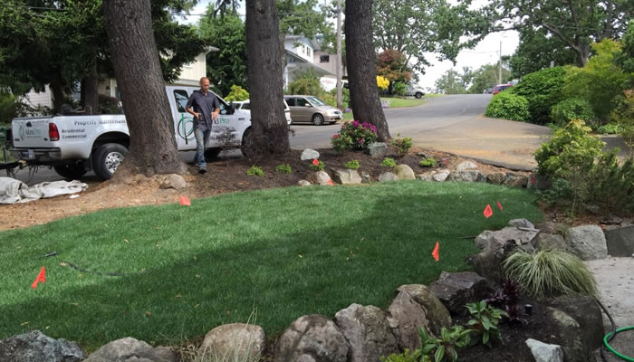
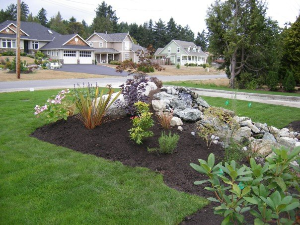
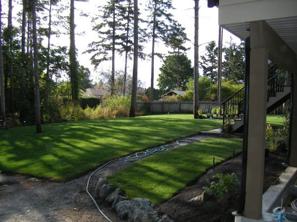
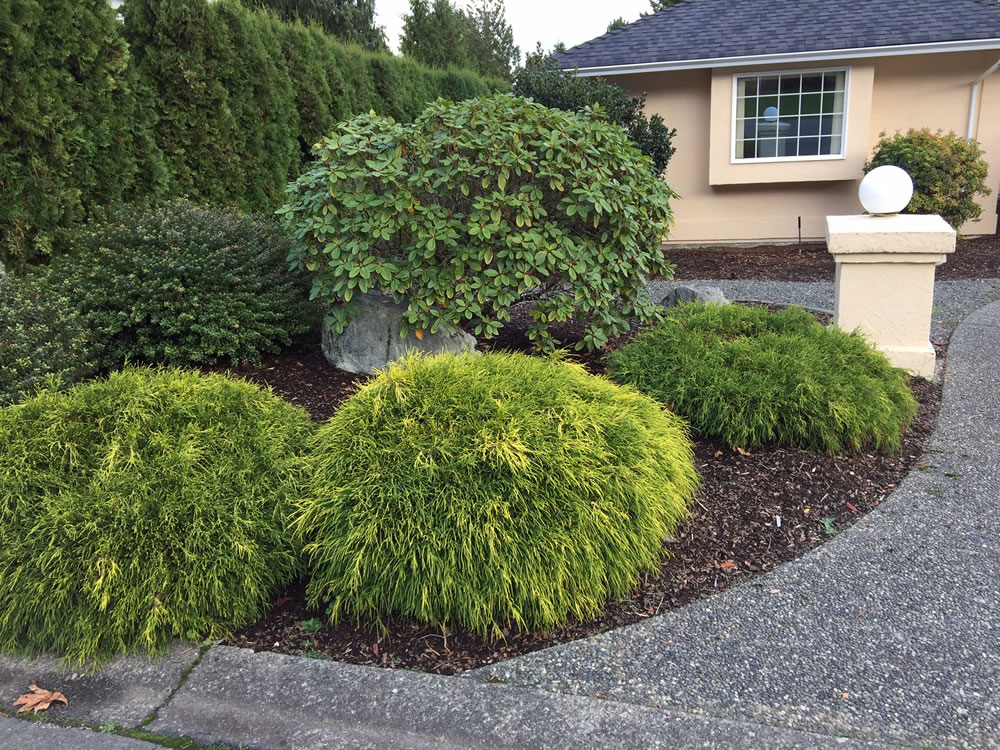
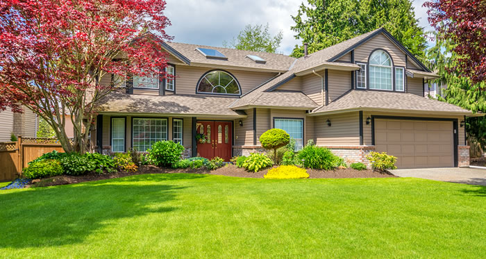
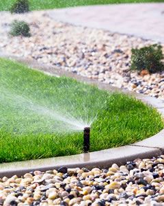
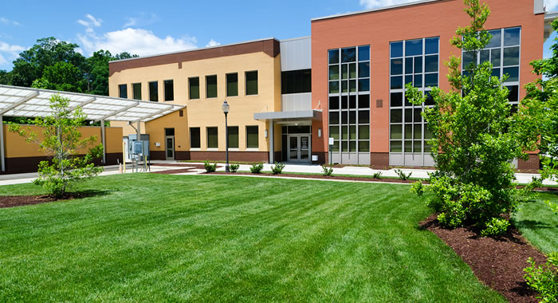
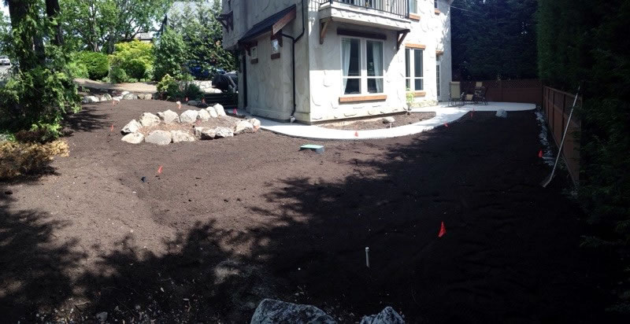

Homes, listings, and backyard projects
- Total backyard makeovers
- Yard cleanup before listing a home
- New lawns, planting, irrigation, and rock features
- Tree trimming and hedge pruning
Sidney to Greater Victoria
Island Pro handles lawn care, cleanups, landscape installation, and strata or estate maintenance across Greater Victoria. Cam McLennan coordinates the work and the estimate path stays simple: call, book a look, get a plan.

From weekly mowing to a backyard makeover, the same crew keeps the work organized.
What they handle
Island Pro covers three practical jobs: keep a property maintained, restore an overgrown yard, or build the landscape work you have planned.
Regular lawn cutting and lawn care for homes, commercial properties, stratas, and larger residential properties.
Overgrown lawns, hedge pruning, tree trimming, blackberry removal, and cleanup work before a property goes on the market.
Landscape design, new lawns, planting, rock features, irrigation, and larger makeover projects.
Construction support for patios, retaining-wall systems, pavers, lawn and concrete work, and finished outdoor areas.
Pick the right path
Residential customers, real estate agents, strata councils, and commercial properties need different levels of upkeep. The estimate should start with that context.
Project proof
Finished lawns, stone features, cleanup work, and installation photos show the range without overcomplicating it.



Customer notes
“Island Pro was responsive, punctual and thorough.”Barbara F. · customer note
“He made me look great with the work he did for my client. Island Pro was quick, professional, did a lovely job.”Susan P. · Realtor, Macdonald Realty
Seasonal work
Greater Victoria yards change fast. Call about the service your property needs right now.

Regular cuts for homes, strata properties, and commercial sites.

Sprinkler and irrigation work for lawns and gardens.

Landscape maintenance for properties that need recurring attention.

Cleanup and landscaping support for existing Saanich Peninsula properties.
Estimate path
For maintenance, cleanup, or installation work, Island Pro asks customers to call or use the contact form to schedule an estimate.